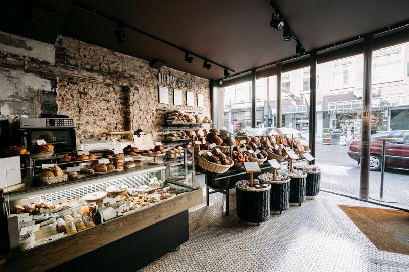
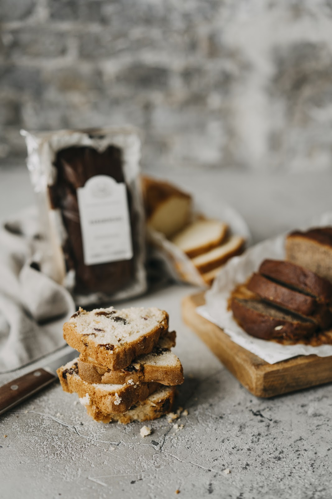
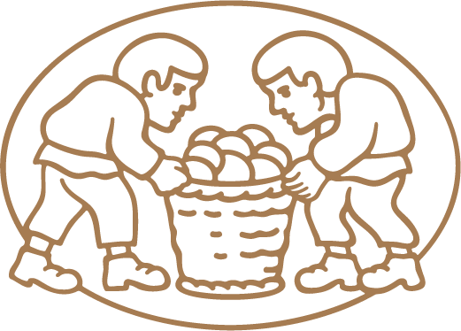
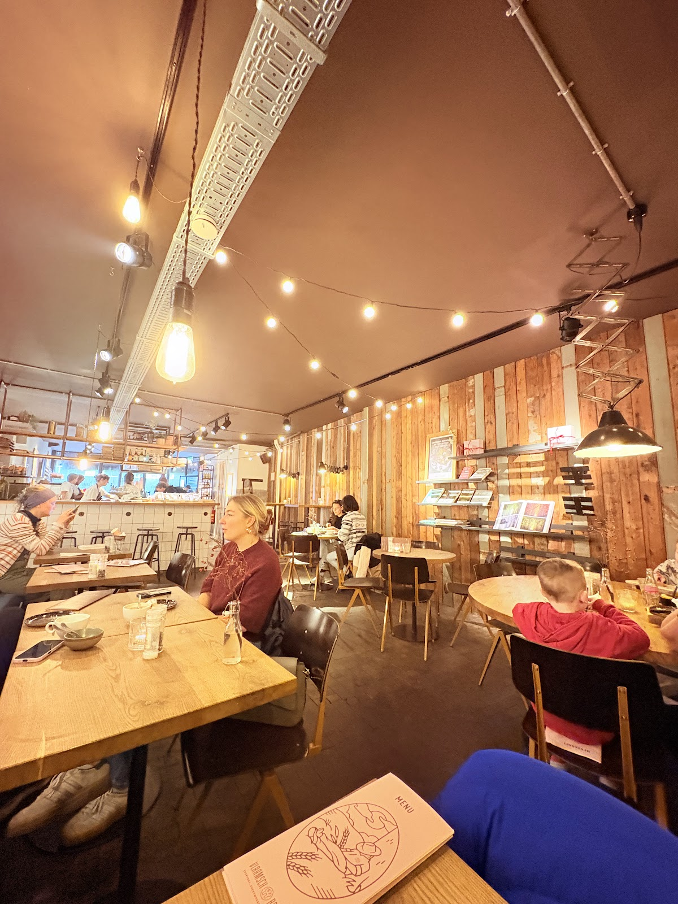
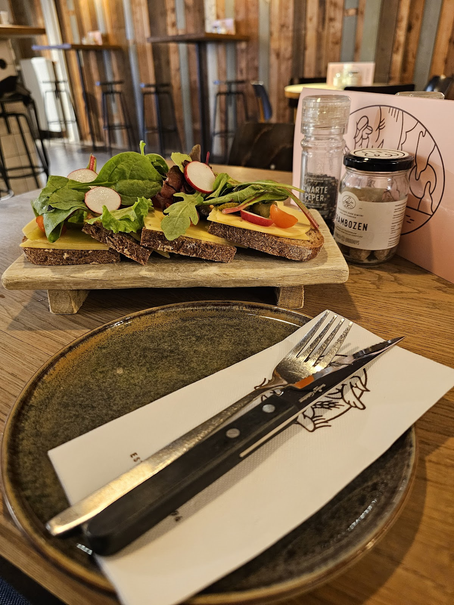
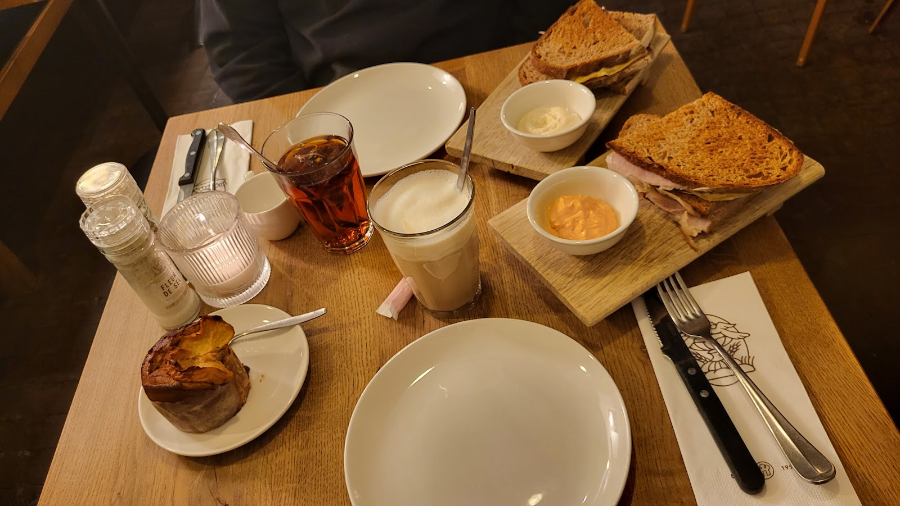
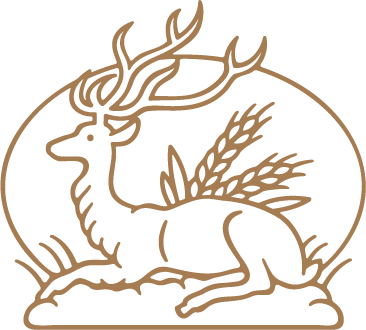
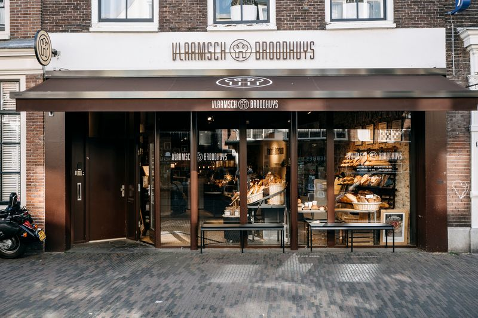

Wat er op de toonbank ligt
Binnen ruikt het naar korst en boter. In de manden langs de baksteen liggen de broden, in de vitrine de croissants en taartjes. Op de muur hangen de borden, net als hieronder.
Zuurdesem
Stevige broden met een donkere korst, het hart van de zaak.
Pousse-lent
Deeg dat de tijd krijgt om langzaam te rijzen.
Viennoiserie
Croissants en ander roomboterwerk voor bij de koffie.
Patisserie
Taartjes en cake uit de vitrine.
Take-out
Koffie, een broodje, ontbijt of lunch om mee te nemen.



Brood haalt u hier gewoon over de toonbank. Weet u niet wat u kiezen moet? Vraag het achter de vitrine.
Aanschuiven voor de lunch
Achter de winkel zit de lunchroom: lange houten tafels, een ronde tafel voor gezelschappen en lichtslingers aan het plafond. Hier eet u Dimitri's boterhamme, op het brood van de toonbank, met verschillende soorten beleg.
Liever een tosti, een stuk taart of alleen koffie? Ook goed. Met een groep komen? Bel even, dan denken we mee.
Bel voor een tafel


4,0
gemiddeld uit 336 reviews op Google
“Heel vriendelijk en behulpzaam personeel om iedereen van ons gezelschap met persoonlijke wensen (o.a. veganistisch opties die niet op de menukaart stonden) tevreden te maken. We hebben genoten aan de ronde tafel van de erg lekkere zuurdesem boterhammen en verschillende soorten beleg. Kortom, fijn en heerlijk geluncht,…”
“lekkere taartjes en prima koffie. gezellige sfeer. aardig personeel. alleen duurde het een beetje lang voordat de bestelling werd opgenomen”

Elke dag van 8 tot 5
Maandag tot en met zondag, 08:00 tot 17:00. U vindt ons midden in de Twijnstraat, herkenbaar aan de bruine luifel.
